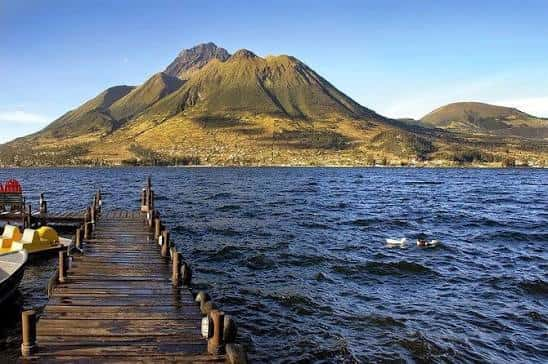
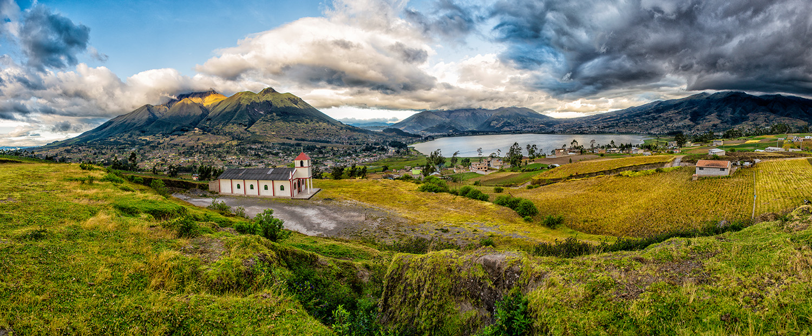

- Area:579 km²
- Population:About 125,000
- Elevation:2,565 m above sea leve
- FoundedJune 25, 1824
- Famous for Indigenous culture, traditional textiles, and the Plaza de Ponchos market
- Best seasonJune to September, generally drier months
Weather

- Temperature: 16°C
- Conditions: Partly cloudy
- Wind: 10 km/h
- Wind chill: N/A